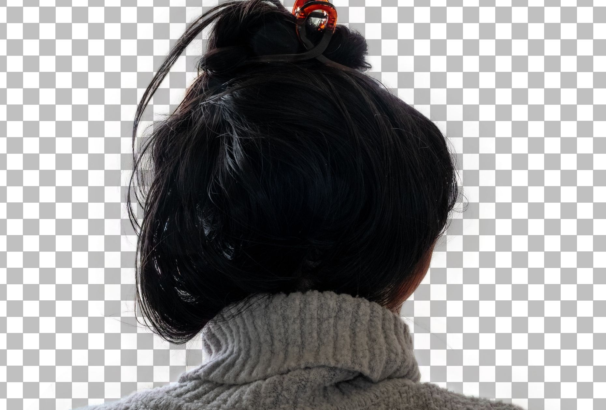
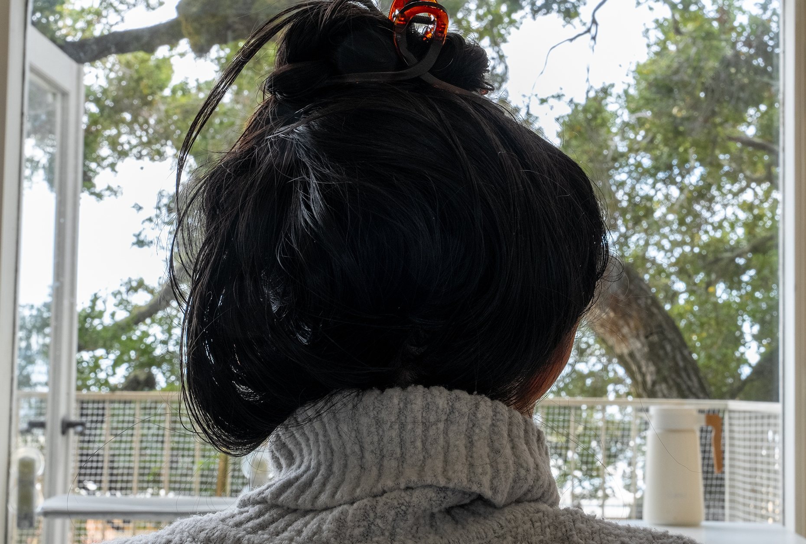
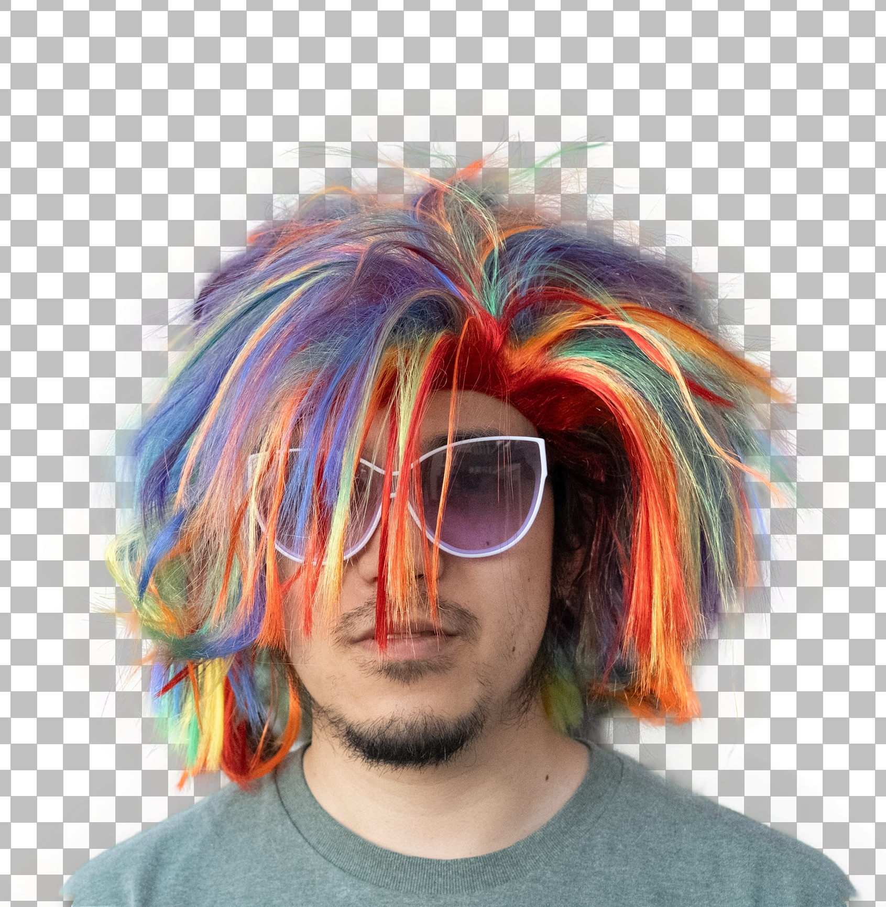
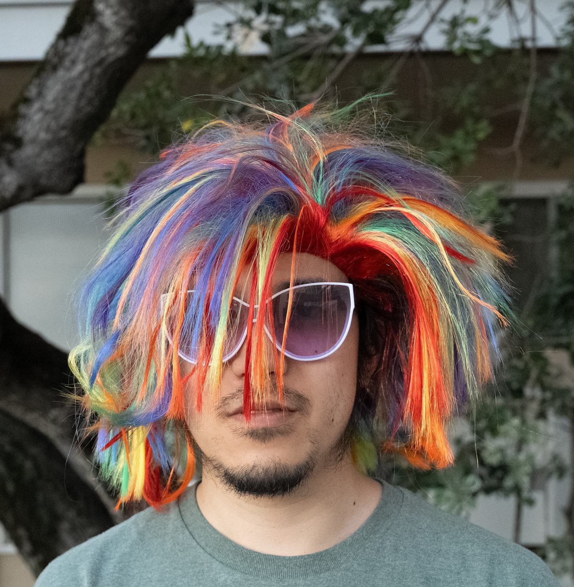
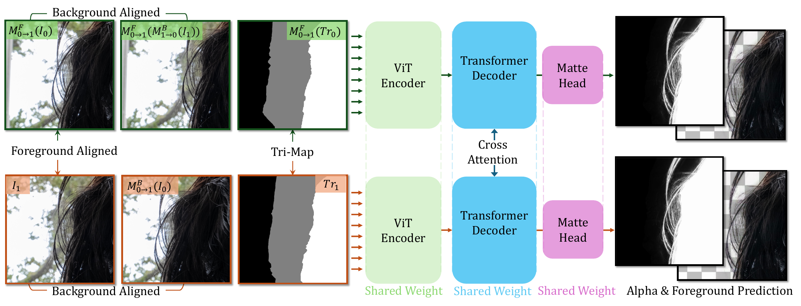
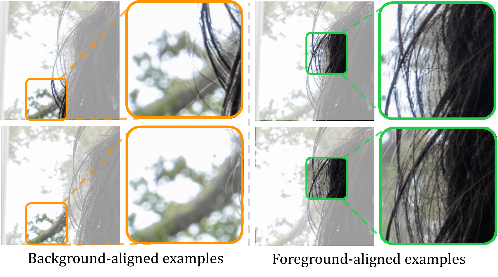

Capture the parallax
Two portrait images from nearby viewpoints expose different foreground and background motion.
1CUHK 2Adobe NextCam 3Shanghai AI Laboratory 4CPII under InnoHK




Single-image matting is fundamentally ambiguous. We turn the slight viewpoint change already present in burst photography into an extra constraint—separating fine foreground structures from complex backgrounds without a green screen.
Two portrait images from nearby viewpoints expose different foreground and background motion.
We estimate foreground and background motion separately, revealing complementary evidence near occlusion boundaries.
Reliable background alignment is fused directly; noisier foreground alignment enters through cross-attention.
Our two streams share architecture but play different roles. The main path learns a stable matte from pixel-aligned background evidence, while the auxiliary path softly corrects uncertain foreground correspondences in feature space.

Watch how a small baseline creates enough motion parallax to recover hair strands, semi-transparent boundaries, and clean foreground colors in challenging real-world scenes.
Pick any two outputs, then drag the split view to inspect them at full resolution. Compare our alpha and foreground predictions with strong academic and commercial baselines.
After layer-specific warping, foreground and background evidence becomes easy to interpret: one alignment holds the background still, while the other holds the subject still.

Explore the camera-ready paper, supplementary material, and complete qualitative gallery. If this work helps your research, please cite it.
ECCV 2026 · Camera-ready paper and supplementary results.
@inproceedings{cai2026parallax,
title={Parallax Portrait Matting},
author={Cai, Xin and Chen, Jiawen and Jebe, Lars
and Xue, Tianfan and Zhang, Zhoutong},
booktitle={European Conference on Computer Vision},
year={2026}
}